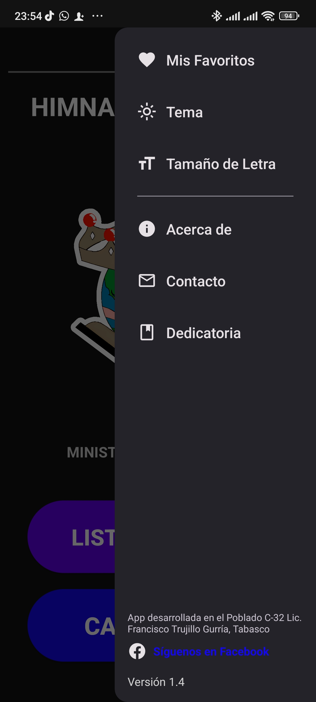

Himnario de Coros
Aplicación para Android
Una aplicación diseñada para facilitar la búsqueda y lectura de alabanzas y coros. No busca reemplazar el formato físico, sino ofrecer una alternativa digital para quienes prefieren acceder de manera rápida y sencilla a su repertorio musical. Esperando que sea de gran utilidad para exaltar el nombre del Señor en todo lugar y momento.
Características principales:
- Búsqueda rápida por título sin restricciones ortográficas.
- Modo oscuro para reducir el cansancio visual.
- Sección de favoritos para acceder rápidamente a los coros preferidos.
- Filtrado de coros por categoría.
- Sección de errores y sugerencias.
- Permite ajustar el tamaño de texto para una mejor legibilidad.
- Funciona al 100% sin conexión a Internet.


